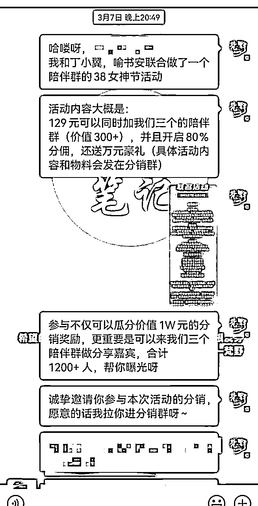

来源：https://iqwin9cn5r.feishu.cn/docx/LbaXdlAmZofpQTxPBNNcwHg4nod
大家好，见贴欢喜，我是梵野，距离38女神节联名活动过去三天了，本文将详细拆解我在38女神节，靠联名营销拉新累计800人的全过程，给做线上社群的小伙伴提供一个发售、营销以及承接流程。
本帖方法，适用于私域新手开启陪伴型社群，或者百人以上遇到增长瓶颈的社群，影响力越大，基础越大，效果越是明显，有高客单价产品承接者尤为适用，可以在接下来的节日中使用。
无论是联名还是跨界活动，都是通过创新的合作方式，带来新的活力和增长点。
结合上面对于联名和跨界的解释，不难得出几个关键要素：
那实际应用在社群拉新上，就需要至少满足：
以上三点，是这个活动能够一开始就爆火的基本框架
拉新活动本质离不开：裂变、转介绍
这里面有三个维度：
所以在规则上，我们商议了三个方案并行：
福利一：老用户补差价29元，即可加入原价 200+的两位大佬的年度陪伴群
福利二：活动期间，分佣提升至 80%，邀请一个就有 103 元的收益，后续我们来交付，帮大家“躺赚”
福利三：参与分销的朋友，扫码进群，还能瓜分价值 1w 奖品，还有机会在 1200+人社群做嘉宾
这三个福利方案，其实就是针对上面所说的三个维度定制的：
1、福利一，就是为了让老用户本人先积极参与进来，只需要花费很低的价格，就可以加入另外两个价值200+以上的高质量陪伴群，这里的细节是：开头就介绍另外两位老师的背景，和活动时间，再加上几乎是不用抉择的价格，而且成交红包发在群里，居多的转账信息，本身就是一次情绪的调动，老用户的感受就是再不加入活动就要结束了，这么好的活动不加入就亏了
2、福利二，就是为了让老用户不止自己参与进来，还能够参与到分销活动中，80%的高分佣，一单赚103元，并且强调了我们三个社群的高质量，物料文案都做好了，只需要简单操作，降低了老用户参与分销的难度。为什么没有设置100%分佣，这也是我们商量后决定的，因为本身三个主理人对于内容和社群用户体验感就要求比较高，100%分销有可能会引来大批量免费用户，降低用户质量，这也不是我们所希望的。
3、福利三，就是为了寻找KOL准备的奖励，我们做了详细的邀请话术，还有诱人的分销奖励，当然最打动KOL的一定是他们所需要的，1200+人社群的分享嘉宾，得到曝光和流量。直击痛点，精准营销。当天就迎来了将近90位的KOL进群分销，裂变
经过这三个福利，无论新老用户还是KOL都获得了自己的最大既得利益，于是活动第一天就撬动将近300人的流量，每个人的社群都新增100左右。
3.7日我在自己陪伴群发布了女神节拉新活动，开启80%高分佣，本意是想做一波小的拉新活动，小翼找到我，说看到我在做活动，觉得我们社群无论是分享质量还是价格上来说都是匹配的，能够一起联合做活动，这里面也有一个重要因素就是，之前合伙人群里朋友3个社群一起的拉新活动做的很好，在此还要感谢之前小伙伴的经验。
① 根据三个社群本身价值和内容，确定本次活动价格129元
② 确定活动有效时间为一周，3.7-3.14日
③ 确定活动福利，老用户福利，新用户福利，KOL福利
④ 确定发售步骤，和各个环节的发售话术，以及邀请KOL话术
⑤ 制作活动海报、分销奖励海报、入群抽奖海报
① 3.7日中午三个主理人先在自己陪伴群内宣布福利活动，鼓励大家加入和参加推广，当天晚上就成交了将近100人的老用户，有20-30人的分销群
② 3.7日三个主理人同步发朋友圈，吸引自身私域还没有加入的新用户进行转化

③ 3.8日早上，发布公众号文章，因为我们三个都有日更公众号，有公众号粉丝基础
④ 3.8日中午同步找KOL合作分销，当天分销群壮大到80多人，很多KOL都参与了进来，当日分销出单大概60多单

⑤ 朋友圈和分销群持续发力，做好分销群销售氛围，做好陪伴群新用户价值体验感
⑥ 做好陪伴群分享内容，提升新用户价值体验感，做好标签梳理，见面礼和后续需求
三个陪伴群合计拉新用户600多人，分别每个群分别增长200多人，我们一开始预期是每人增长50人，没想到远远超过我们的预期，目前活动还没结束，还在继续新增
① 和同频人交流做事，效率极其高，这件事从开始到发售，只用了几个个小时，就敲定了前期的所有工作，三个人分工合作，发挥自己优势互补，1+1+1>3
② 前期的积累和真诚的利他，是必杀技，如果没有各自前期陪伴群优质的输出，老用户就不会大批量的参与，那么可能活动一开始就冷场了，如果没有平常的利他思维，可能很多KOL不会参与分销，那么就没有后续的大批量新用户
③ 借势很重要，我们三个深耕不同领域，小翼小红书14W粉、我深耕视频号2年多、书安日更公众号400天，变现能力都很强，基于这个信任的前提下，互相借势，再结合KOL的势能，最终把这件事做成
活动只是开始，陪伴和交付才是意义，保持做社群的初衷，高质量分享和输出，提升整个社群的体验感才能长久。